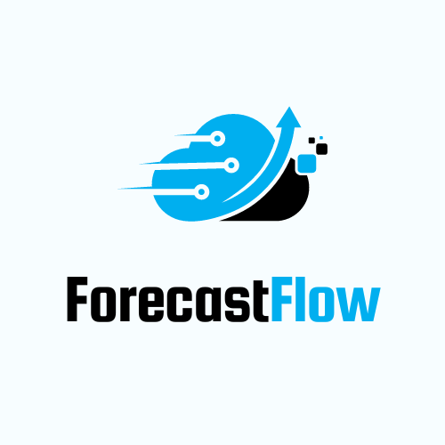

<nav class="navbar navbar-expand-lg navbar-light bg-light">
    <div class="container-fluid">
      <button class="navbar-toggler" type="button" data-bs-toggle="collapse" data-bs-target="#navbarTogglerDemo01" aria-controls="navbarTogglerDemo01" aria-expanded="false" aria-label="Toggle navigation">
        <span class="navbar-toggler-icon"></span>
      </button>
      <div class="collapse navbar-collapse" id="navbarTogglerDemo01">
        
        <a class="nav-link active" aria-current="page" href="#">ForecastFlow</a>
        <ul class="navbar-nav me-auto mb-2 mb-lg-0">
        </ul>
        <form class="d-flex">
          <button class="btn btn-outline-success" type="submit">Login</button>
        </form>
      </div>
    </div>
  </nav>
  
  <div class="dashboard">
    <h1></h1>
    <div class="header">
        <div class="parent">
            
            <h3 class="greeting">
                Platform tailored for business owners seeking predictive analytics solutions
            </h3>
        </div>
    </div>
</div>

<div class="dashboard">
    <h1></h1>
    <div class="header">
        <div class="parent">
            
            <h3 class="greeting">
                ForecastFlow simplifies the process by allowing users to extract highly accurate prediction models directly from their own datasets.
            </h3>
        </div>
    </div>
</div>